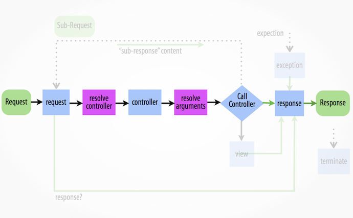

El componente HttpKernel proporciona un proceso estructurado para convertir una Petición en una Respuesta usando el despachador de eventos. Es bastante flexible para crear una plataforma completa (Symfony), una microplataforma (Silex) o un sistema CMS avanzado (Drupal).
Puedes instalar el componente de varias maneras diferentes:
Cada interacción web de HTTP empieza con una petición y termina con una respuesta. Tu trabajo como desarrollador es crear el código PHP que lee la información de la petición (p. ej. la URL) y crea y devuelve una respuesta (p. ej. una página HTML o una cadena JSON).

Típicamente, alguna clase de la plataforma o sistema está construida para manejar todas las tareas repetitivas (p. ej. enrutado, seguridad, etc.) a modo de que un desarrollador pueda fácilmente construir cada página de la aplicación. Exactamente cómo están construidos estos sistemas varía mucho. El componente HttpKernel proporciona una interfaz que formaliza el proceso de empezar con una petición y crear la respuesta apropiada. El componente pretende ser el corazón de cualquier aplicación o plataforma, no importa qué tanto varíe la arquitectura de ese sistema:
namespace Symfony\Component\HttpKernel;
use Symfony\Component\HttpFoundation\Request;
interface HttpKernelInterface
{
// ...
/**
* @return Response Una instancia de Response
*/
public function handle(
Request $request,
$type = self::MASTER_REQUEST,
$catch = true
);
}
Internamente, el método HttpKernel::handle() — implementa concretamente el método HttpKernelInterface::handle() — define un flujo de trabajo que inicia con una Symfony\Component\HttpFoundation\Request y termina con una Symfony\Component\HttpFoundation\Response.
Los detalles exactos de este flujo de trabajo son la clave para entender cómo trabaja el núcleo (y la plataforma Symfony o cualquier otra biblioteca que use el núcleo).
El método HttpKernel::handle() internamente trabaja despachando eventos. Esto hace al método tanto flexible, pero también un poco abstracto, debido a que todo el «trabajo» de una aplicación/plataforma construida con HttpKernel está hecha con escuchas de eventos.
Para ayudar a explicar este proceso, este documento mira cada paso del proceso y habla sobre cómo trabaja una implementación específica del HttpKernel —la plataforma Symfony—.
Inicialmente, utilizar el Symfony\Component\HttpKernel\HttpKernel es realmente sencillo, e implica crear un despachador de eventos y un resolutor de controlador (explicado más adelante). Para completar tu núcleo, añadirás más escuchas de eventos para los eventos explicados más adelante:
use Symfony\Component\HttpFoundation\Request;
use Symfony\Component\HttpKernel\HttpKernel;
use Symfony\Component\EventDispatcher\EventDispatcher;
use Symfony\Component\HttpKernel\Controller\ControllerResolver;
// crea el objeto Request
$request = Request::createFromGlobals();
$dispatcher = new EventDispatcher();
// ... añade algunos escuchas de eventos
// crea tu resolutor de controlador
$resolver = new ControllerResolver();
// crea una instancia del núcleo
$kernel = new HttpKernel($dispatcher, $resolver);
// en realidad ejecuta el núcleo, el cuál convierte la petición en una respuesta
// despachando eventos, invocando a un controlador, y devolviendo la respuesta
$response = $kernel->handle($request);
// difunde el contenido y envía las cabeceras
$response->send();
// desencadena el evento kernel.terminate
$kernel->terminate($request, $response);
Ve «Un ejemplo completo funcionando» para más implementaciones concretas.
Para información general sobre cómo añadir escuchas a los siguientes eventos, ve Creando un escucha del evento.
Truco
Fabien Potencier también escribió una magnífica serie sobre la utilización del componente HttpKernel y otros componentes de Symfony2 para crear tu propia plataforma. Ve Crea tu propia plataforma... en lo alto de los componentes de Symfony2.
Propósito típico: Añadir más información a la Petición, iniciar partes del sistema, o regresar una Respuesta si es posible (p. ej. una capa de seguridad que niega el acceso).
Tabla de información de eventos del núcleo
El primer evento despachado dentro del método HttpKernel::handle es kernel.request, el cual puede tener una serie de diferentes escuchas.
Los escuchas de este evento pueden ser bastante diversos. Algunos escuchas —tal como un escucha de seguridad— podrían tener suficiente información para crear un objeto Respuesta inmediatamente. Por ejemplo, si un escucha de seguridad determinó que un usuario no tiene acceso, ese escucha puede regresar una Symfony\Component\HttpFoundation\RedirectResponse a la página de inicio de sesión o una respuesta 403 de «Acceso denegado».
Si al llegar a este punto regresa una Respuesta, el proceso salta directamente al evento kernel.response.
Otros escuchas sencillamente inician cosas o añaden más información a la petición. Por ejemplo, un escucha podría determinar y poner la región en el objeto Petición.
Otro escucha común es el de enrutado. Un escucha enrutador puede procesar la Petición y determinar el controlador que se debería ejecutar (ve la próxima sección). De hecho, el objeto Petición tiene una bolsa de «atributos» misma que es un sitio perfecto para almacenar este dato extra, específico de la aplicación sobre la petición. Esto significa que si tu escucha enrutador de alguna manera determina el controlador, lo puedes almacenar en los atributos de la Petición (los cuáles puede utilizar el resolutor del controlador).
En general, el propósito del evento kernel.request es o bien, crear y regresar una Respuesta directamente, o añadir información a la Petición (p. ej. poniendo la región o configurando alguna otra información en los atributos de la Petición).
Suponiendo que ningún escucha del kernel.request fuera capaz de crear una Respuesta, el próximo paso en HttpKernel es determinar y preparar (es decir, resolver) el controlador. El controlador es la parte final del código de la aplicación que es responsable de crear y regresar la Respuesta para una página específica. El único requisito es que sea una función PHP que se pueda llamar —es decir, una función o método en un objeto, o un Cierre—.
Pero el cómo determinar el controlador exacto para una petición es responsabilidad enteramente de tu aplicación. Este es el trabajo del «resolutor de controlador» —una clase que implementa la Symfony\Component\HttpKernel\Controller\ControllerResolverInterface y es uno de los argumentos del constructor del HttpKernel.
Tu trabajo es crear una clase que implemente la interfaz y rellenar sus dos métodos: getController y getArguments. De hecho, ya existe una implementación predefinida, la cual puedes utilizar directamente o estudiar para ver cómo trabaja: Symfony\Component\HttpKernel\Controller\ControllerResolver. Esta implementación se explica más en la barra lateral de abajo:
namespace Symfony\Component\HttpKernel\Controller;
use Symfony\Component\HttpFoundation\Request;
interface ControllerResolverInterface
{
public function getController(Request $request);
public function getArguments(Request $request, $controller);
}
Internamente, el HttpKernel::handle primero llama al método getController() en el resolutor del controlador. Este método es pasado a la Petición y es el responsable de determinar de alguna manera y regresar un ejecutable PHP (el controlador) basándose en la información de la petición.
El segundo método, getArguments(), será llamado después de lanzado otro evento —kernel.controller—.
Propósito típico: Iniciar cosas o cambiar el controlador justo antes de ejecutarlo.
Tabla de información de eventos del núcleo
Después de haber determinado el controlador a ejecutar, HttpKernel::handle desencadena el evento kernel.controller. Los escuchas de este evento podrían iniciar alguna parte necesaria del sistema después de determinar ciertas cosas (p. ej. el controlador, información de enrutado) pero antes de ejecutar el controlador. Para algunos ejemplos, ve la sección Symfony2 abajo.
Los escuchas de este evento también pueden cambiar completamente el controlador ejecutable llamando al método FilterControllerEvent::setController en el objeto Evento pasado a los escuchas en este evento.
Luego, HttpKernel::handle llama al método getArguments(). Recuerda que el controlador devuelto en getController es ejecutable. El propósito de getArguments es devolver el arreglo de argumentos que se deberían pasar a ese controlador. Exactamente cómo se hace esto es responsabilidad completamente de tu diseño, aunque el Symfony\Component\HttpKernel\Controller\ControllerResolver incorporado es un buen ejemplo.
Al llegar a este punto el núcleo tiene un ejecutable PHP (el controlador) y un arreglo de argumentos que se debería pasar al llamar al ejecutable.
¡El siguiente paso es sencillo! HttpKernel::handle ejecuta el controlador.
El trabajo del controlador es construir la respuesta para el recurso dado. Esta podría ser una página HTML, una cadena JSON o cualquier otra cosa. A diferencia de todas las demás partes del proceso hasta ahora, este paso es implementado por el «desarrollador final», por cada página construida.
Normalmente, el controlador regresará un objeto Respuesta. Si esto es cierto, ¡entonces el trabajo del núcleo está hecho! En este caso, el próximo paso es el evento kernel.response.
Pero si el controlador regresa cualquier otra cosa más alla de una Respuesta, entonces el núcleo tiene que hacer un poco más de trabajo —kernel.view (debido a que el objetivo final siempre es generar un objeto Respuesta).
Nota
Un controlador tiene que regresar algo. Si un controlador regresa null, inmediatamente se lanzará una excepción.
Propósito típico: Transformar en Respuesta un valor devuelto por un controlador que no es una Respuesta.
Tabla de información de eventos del núcleo
Si el controlador no regresa un objeto Respuesta, entonces el núcleo despacha otro evento —kernel.view—. El trabajo de un escucha de este evento es utilizar el valor devuelto por el controlador (p. ej. un arreglo de datos o un objeto) para crear una Respuesta.
Esto puede ser útil si quieres utilizar una capa para la «vista»: en vez de regresar una Respuesta desde el controlador, regresas los datos que representan la página. Un escucha de este evento entonces podría utilizar estos datos para crear una Respuesta en el formato correcto (p. ej. HTML, json, etc.).
En esta etapa, si ningún escucha pone una respuesta en el evento, entonces se lanza una excepción: ya sea un controlador o uno de los escuchas de la vista siempre deben regresar una Respuesta.
Propósito típico: Modificar el objeto Respuesta justo antes de enviarlo
Tabla de información de eventos del núcleo
El objetivo final del núcleo es transformar una Petición a una Respuesta. La Respuesta se podría crear durante el evento kernel.request, regresado del controller, o regresado por uno de los escuchas del evento kernel.view.
Independientemente de quién creó la Respuesta, otro evento —kernel.response— es despachado inmediatamente después. Un escucha típico de este evento modificará de alguna manera el objeto Respuesta, tal como modificar cabeceras, añadir galletas, o incluso cambiando el contenido de la Respuesta él (p. ej. inyectando algún JavaScript antes de la etiqueta </body> final de una respuesta HTML).
Después de despachado este evento, el objeto Respuesta final es regresado desde el método handle(). En el caso de uso más típico, entonces puedes llamar al método send(), el cual envía las cabeceras e imprime el contenido de la Respuesta.
Nuevo en la versión 2.1: El evento kernel.terminate es nuevo en Symfony 2.1.
Propósito típico: Realizar alguna acción «pesada» después de transmitir la respuesta al usuario.
Tabla de información de eventos del núcleo
El evento final del proceso HttpKernel es kernel.terminate y es único porque ocurre después del método HttpKernel::handle, y después de enviar la respuesta al usuario. Recuerda de arriba, entonces que el código que usa el núcleo, acaba así:
// difunde el contenido y envía las cabeceras
$response->send();
// desencadena el evento kernel.terminate
$kernel->terminate($request, $response);
Como puedes ver, al llamar al $kernel->terminate después de enviar la respuesta, desencadenas el evento kernel.terminate donde puedes llevar a cabo determinadas acciones que puediste haber diferido para regresar la respuesta al cliente tan rápidamente como fuera posible (p. ej. el envío de correo electrónico).
Nota
Usar el evento kernel.terminate es opcional, y sólo lo deberías llamar si tu núcleo implementa la Symfony\Component\HttpKernel\TerminableInterface.
Propósito típico: Manejar algún tipo de excepción y crear una Respuesta apropiada para que la regrese la excepción.
Tabla de información de eventos del núcleo
Si se desencadena una excepción en cualquier punto dentro del HttpKernel::handle, se lanza otro evento —kernel.exception—. Internamente, el cuerpo de la función handle está envuelto en un bloque prueba-captura. Al lanzar cualquier excepción, el kernel.exception es lanzado a modo de que tu sistema pueda responder de alguna manera a la excepción.
Cada escucha de este evento se pasa a un objeto Symfony\Component\HttpKernel\Event\GetResponseForExceptionEvent, el cual puedes utilizar para acceder a la excepción original vía el método getException(). Un escucha típico de este evento comprobará algún determinado tipo de excepción y creará una Respuesta de error apropiada.
Por ejemplo, para generar una página 404, podrías lanzar un tipo de excepción especial y luego añadir un escucha para este evento que busque esta excepción y genere y regrese una Respuesta 404. De hecho, el componente HttpKernel viene con un Symfony\Component\HttpKernel\EventListener\ExceptionListener, el cual si eliges usarlo, de manera predeterminada hará esto y más (ve la barra lateral abajo para más detalles).
Como has visto, puedes crear y suscribir escuchas de evento a cualquiera de los eventos despachados durante el ciclo del HttpKernel::handle. Típicamente un escucha es una clase PHP con un método retrollamado, pero puede ser cualquier cosa. Para más información sobre la creación y suscripción de escuchas de evento, ve El componente despachador de eventos.
El nombre de cada uno de los eventos del «núcleo» está definido como constante en la clase Symfony\Component\HttpKernel\KernelEvents Además, a cada escucha de evento se le pasa un único argumento, el cual es alguna subclase de Symfony\Component\HttpKernel\Event\KernelEvent. Este objeto contiene información sobre el estado actual del sistema y cada evento tiene su propio objeto Evento:
| Nombre | Constante KernelEvents | Argumento pasado al escucha |
| kernel.request | KernelEvents::REQUEST | Symfony\Component\HttpKernel\Event\GetResponseEvent |
| kernel.controller | KernelEvents::CONTROLLER | Symfony\Component\HttpKernel\Event\FilterControllerEvent |
| kernel.view | KernelEvents::VIEW | Symfony\Component\HttpKernel\Event\GetResponseForControllerResultEvent |
| kernel.response | KernelEvents::RESPONSE | Symfony\Component\HttpKernel\Event\FilterResponseEvent |
| kernel.terminate | KernelEvents::TERMINATE | Symfony\Component\HttpKernel\Event\PostResponseEvent |
| kernel.exception | KernelEvents::EXCEPTION | Symfony\Component\HttpKernel\Event\GetResponseForExceptionEvent |
Cuándo utilizas el componente HttpKernel, eres libre de asociar cualquier escucha a los eventos del núcleo y utilizar cualquier resolutor de controlador que implemente la Symfony\Component\HttpKernel\Controller\ControllerResolverInterface. No obstante, el componente HttpKernel viene con algunos escuchas incorporados y un ControllerResolver que puedes usar para crear un ejemplo que funcione:
use Symfony\Component\HttpFoundation\Request;
use Symfony\Component\HttpFoundation\Response;
use Symfony\Component\HttpKernel\HttpKernel;
use Symfony\Component\EventDispatcher\EventDispatcher;
use Symfony\Component\HttpKernel\Controller\ControllerResolver;
use Symfony\Component\Routing\RouteCollection;
use Symfony\Component\Routing\Route;
use Symfony\Component\Routing\Matcher\UrlMatcher;
use Symfony\Component\Routing\RequestContext;
$routes = new RouteCollection();
$routes->add('hello', new Route('/hello/{name}', array('_controller' =>
function (Request $request) {
return new Response(sprintf("Hello %s", $request->get('name')));
}
)));
$request = Request::createFromGlobals();
$matcher = new UrlMatcher($routes, new RequestContext());
$dispatcher = new EventDispatcher();
$dispatcher->addSubscriber(new RouterListener($matcher));
$resolver = new ControllerResolver();
$kernel = new HttpKernel($dispatcher, $resolver);
$response = $kernel->handle($request);
$response->send();
$kernel->terminate($request, $response);
Además de la petición «principal» enviada al HttpKernel::handle, también puedes enviar las así llamadas «subpeticiones». Una subpetición se ve y actúa como cualquier otra petición, pero típicamente sirve para reproducir sólo una pequeña porción de una página en vez de una página completa. Generalmente haces subpeticiones desde tu controlador (o quizás desde dentro de una plantilla, aquella que está reproduciendo tu controlador).

Para ejecutar una subpetición, usa el HttpKernel::handle, pero cambia el segundo argumento de la siguiente manera:
use Symfony\Component\HttpFoundation\Request;
use Symfony\Component\HttpKernel\HttpKernelInterface;
// ...
// crea alguna otra petición manualmente como se necesaria
$request = new Request();
// por ejemplo, posiblemente definas este _controller manualmente
$request->attributes->add('_controller', '...');
$response = $kernel->handle($request, HttpKernelInterface::SUB_REQUEST);
// hace algo con esta respuesta
Esto crea otro ciclo petición-respuesta completo donde esta nueva Petición es transformada en una Respuesta. La única diferencia es que internamente algunos escuchas (p. ej. seguridad) sólo pueden actuar en la petición maestra. A cada escucha se le pasa alguna subclase de Symfony\Component\HttpKernel\Event\KernelEvent, dónde puedes usar el método getRequestType() para determinar si la petición actual es la «maestra» o una «subpetición».
Por ejemplo, un escucha que únicamente debe actuar en la petición maestra puede tener esta apariencia:
use Symfony\Component\HttpKernel\HttpKernelInterface;
// ...
public function onKernelRequest(GetResponseEvent $event)
{
if (HttpKernelInterface::MASTER_REQUEST !== $event->getRequestType()) {
return;
}
// ...
}